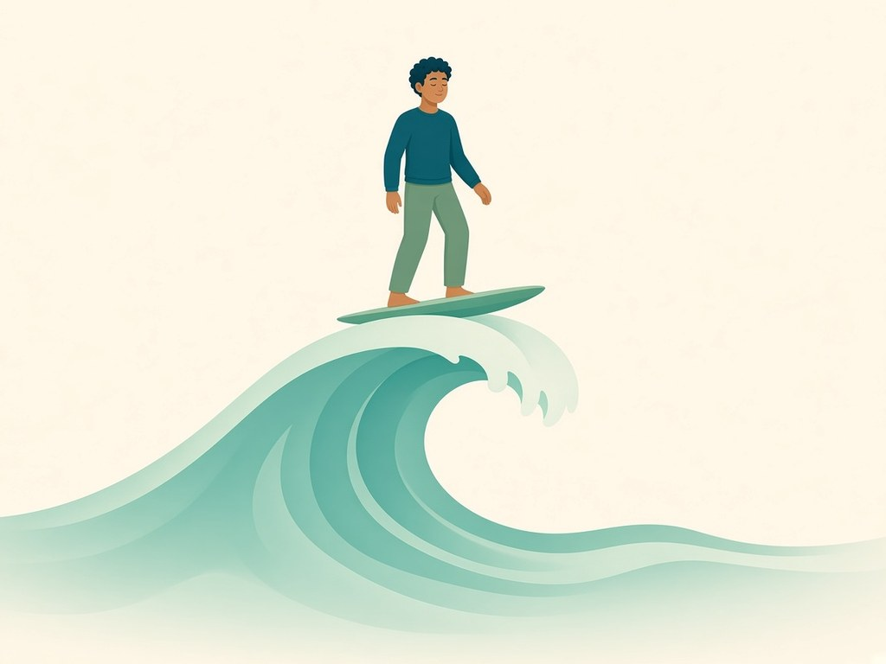

Get help
We're here to support you. Help is always available. You're not alone.
HomeCircle is not a medical device and doesn't give medical advice.
If you're Deaf, hard of hearing or have a speech difficulty
Use 106 if you're Deaf or hard of hearing (TTY). In an emergency, call 106 from a TTY to reach police, fire or ambulance through the National Relay Service. It's free and open 24/7. 106 works only from a TTY, not from an ordinary phone or by text message.
You cannot contact Triple Zero (000) by SMS. The National Relay Service has other ways to reach 000, including NRS Chat, SMS Relay, Voice Relay and NRS Captions.
More details
- SMS Relay: text 0423 677 767 and ask for 000. A relay officer connects you to emergency services. This is not the same as texting 000.
- Voice Relay: call 1800 555 727, press 1, and ask for 000.
- NRS Chat and NRS Captions have a Call 000 button.
- Lifeline: text 0477 13 11 14, 24/7. Or use the National Relay Service and ask for 13 11 14. TTY users call 133 677, Speak and Listen users call 1300 555 727, and internet relay users connect to the NRS online.
These are independent services. HomeCircle is not affiliated with them. Checked against official pages on 10 November 2026.
Helplines
Lifeline
24/7 crisis support for anyone in Australia who is feeling overwhelmed or finding it hard to cope.
24 hours. Call 13 11 14
You can also text 0477 13 11 14.
More info
- Short-term, confidential support from a trained crisis supporter, including if you're thinking about suicide or worried about someone.
- Call 13 11 14, text 0477 13 11 14 or chat online. All three are open 24/7.
Beyond Blue
Free counselling for anxiety, depression or feeling overwhelmed, for anyone in Australia.
24 hours. Call 1300 22 4636
More info
- Counsellors listen and help you find the right mental health services. You can also call if you're supporting a partner, family member or friend.
- Call 1300 22 4636 or use webchat, both 24/7.
- Free and confidential. Local call costs apply on the phone. On webchat you don't have to give your real name.
Suicide Call Back Service
Free 24/7 counselling for anyone affected by suicide, aged 15 and over.
24 hours. Call 1300 659 467
For anyone thinking about suicide, worried about someone, or grieving a suicide.
More info
- For people feeling suicidal, worried about or caring for someone, or who have lost someone to suicide. Also for emotional or mental health issues.
- Phone and online chat are 24/7. Video chat is by appointment (18 and over).
- Free, for people living in Australia. No referral needed.
13YARN
Free 24/7 crisis support for Aboriginal and Torres Strait Islander people, from Aboriginal and Torres Strait Islander Crisis Supporters.
24 hours. Call 13 92 76
Crisis support from Aboriginal and Torres Strait Islander people.
More info
- A confidential, culturally safe place to yarn if you're feeling worried or no good, or worried about someone you know.
- Call 13 92 76 24/7. Text 0447 13 92 76, or type to them online, 4pm to midnight every day.
- Free and confidential.
QLife
Free, anonymous LGBTIQ+ peer support for talking about sexuality, gender, bodies, feelings or relationships.
3pm to 9pm local time, every day. Call 1800 184 527
LGBTIQ+ peer support. Not a crisis line. Out of hours, call Lifeline 13 11 14.
More info
- Run by LGBTIQA+SB people. Family members, friends and others who support someone LGBTIQA+SB are welcome too.
- Phone or webchat, 3pm to 9pm your local time, every day including holidays. Last calls are taken by 8.40pm.
- Free and anonymous. Not a crisis line.
National Alcohol and Other Drug Hotline
Free, confidential support for anyone worried about their own or someone else's alcohol or drug use.
Call 1800 250 015
Connects you to your state's alcohol and drug service. Open 24/7, except South Australia (8.30am to 10pm). In an emergency call 000, or Lifeline 13 11 14 any time.
More info
- Your call goes through to the alcohol and drug service in your state or territory.
- Open 24/7. From South Australia, the service runs 8.30am to 10pm.
- Free and confidential. Run by the Australian Government Department of Health, Disability and Ageing.
Adis 24/7 Alcohol and Drug Support (QLD)
24/7 confidential alcohol and drug support for Queenslanders and the people who care about them.
Call 1800 177 833
Queensland only.
More info
- For people in Queensland with alcohol or drug concerns, their loved ones, and health professionals.
- Call 24/7, chat online with a counsellor, or request a call back. There's also an SMS support program.
National Gambling Helpline
Free, confidential 24/7 support for anyone affected by gambling, yours or someone else's.
24 hours. Call 1800 858 858
Free and confidential, anywhere in Australia. Not run by Gamblers Anonymous.
More info
- Talk to a trained counsellor any time, day or night, from anywhere in Australia.
- Gambling Help Online also has live chat and email support, free and confidential.
- Government funded. Not run by Gamblers Anonymous.
AA Australia
Talk to a sober member of Alcoholics Anonymous, any time, if drinking is a problem for you.
24 hours. Call 1300 222 222
More info
- Call the 24-hour helpline to speak with a sober alcoholic.
- You can also chat live with a member on the AA website, or find an in-person or online meeting.
NA Australia
Talk to a member of Narcotics Anonymous, or find a meeting near you.
Call 1300 652 820
More info
- Call 1300 652 820 to find someone to talk to. Hours aren't published.
- To find meetings, text your suburb or postcode and state (for example, Paddington QLD) to 0488 811 247 and you'll get a list of meetings nearby.
These are independent services. HomeCircle is not affiliated with them.
Disability information and support
For people with disability, families and carers. These aren't crisis lines. In an emergency, call 000.
Disability Gateway
Helps people with disability, their families and carers find information, services and support in Australia. Run by the Australian Government.
Call 1800 643 787, Monday to Friday, 8am to 8pm AEDT/AEST. Not a crisis line.
National Relay Service
Phone calls for people who are deaf, hard of hearing or have a speech communication difficulty.
Contact the NRS, then ask for the number you want to call. That includes any helpline on this page.
NDIS
Information about the National Disability Insurance Scheme.
Information only. Not a crisis line.
Blue Knot Helpline
Trauma specialist support for adults affected by trauma or abuse in childhood, and the people supporting them.
Call 1300 657 380 and press 1, 9am to 5pm AEST/AEDT, 7 days. Not a crisis service.
These are independent services. HomeCircle is not affiliated with them. Checked against official pages on 10 November 2026. Hours and numbers can change, so check the service's own website.
Looking for treatment or rehab?
Official treatment finders, your state's alcohol and drug line, and what's free and what costs money.
Find treatment near youFamily & Partners
For partners, family members, and couples. These lines are beside someone in recovery.
Al-Anon Family Groups Australia
For families and friends of someone with a drinking problem.
More info
- Talk to an Al-Anon member in confidence on 1300 252 666. Hours aren't published.
- Support groups for family and friends of problem drinkers, plus Alateen groups for teens.
Alateen
Part of Al-Anon Australia, for ages about 13 to 18. Same Australian line. HomeCircle itself is an 18+ app.
Family Drug Support
For families and friends of someone using alcohol or other drugs.
24 hours. Call 1300 368 186
More info
- A national support line for families and friends affected by someone's alcohol or other drug use.
- Open 24/7. FDS also runs support meetings in some states.
FDS lists no support meetings in WA, Tasmania or the NT. In WA, the Parent and Family Drug Support Line is listed under Western Australia below.
Gam-Anon
For families and friends of someone with a gambling problem. Meetings in NSW and Queensland, some on Zoom.
Gamblers Anonymous Australia
Meetings and a member to talk to. Not a crisis line, and hours aren't published.
- NSW: Call 0455 717 543
- Queensland and NT: Call 0467 655 799
- South Australia: Call (08) 8212 6933
- Tasmania: Call 0431 965 974
- Western Australia: Call (08) 9487 0688
- Victoria: Email gavictoria18a@gmail.com
Support by state and territory
Alcohol and drug lines run by each state and territory. Keep 000 and Lifeline first: these lines are for advice and support, not emergencies. Checked against each service's own website on 4 November 2026.
Queensland
Adis 24/7 Alcohol and Drug Support
24/7. For Queenslanders and their family and friends.
New South Wales
Alcohol and Drug Information Service (ADIS) NSW
24/7. Sydney metro: 02 8382 1000. For NSW residents and their families.
More info
- Free, confidential counselling, information and referral from professional counsellors, for NSW residents worried about alcohol or drugs.
- Phone 24/7. Web chat is Monday to Friday, 8.30am to 5pm (including public holidays).
Victoria
DirectLine
24/7 phone and online counselling. For Victorians, family members and others.
More info
- Free, confidential alcohol and drug counselling and referral in Victoria, for you or someone else.
- Phone or online, 24/7.
South Australia
Alcohol and Drug Information Service (ADIS), DASSA
Every day 8.30am to 10pm, not 24/7. Local call fee for SA callers. For the public, family and friends.
More info
- Confidential telephone counselling, information and referral. Run by Drug and Alcohol Services South Australia.
- Every day, 8.30am to 10pm. Calling from outside SA: (08) 7087 1743, same hours.
Western Australia
Alcohol and Drug Support Line
24/7. Country callers: 1800 198 024. For anyone worried about their own or someone else's alcohol or drug use.
More info
- Confidential, free and anonymous, 24/7. Metro (08) 9442 5000, country 1800 198 024.
Parent and Family Drug Support Line
24/7. Country callers: 1800 653 203. For anyone worried about someone else's use.
More info
- For family and friends worried about someone else's alcohol or drug use.
- Confidential, free and anonymous, 24/7. Metro (08) 9442 5050, country 1800 653 203.
Tasmania
Alcohol and Drug Information Service
24 hours. For people who use drugs, and family members.
More info
- 24-hour phone information and counselling about the effects of alcohol and drugs, with referral to services.
- For people who use drugs and their family members.
Northern Territory
Alcohol and Drug Information Service (ADIS)
Listed on the NT Government's 24-hour helplines page. For anyone in the NT with alcohol or drug concerns.
More info
- The NT Government lists this number on its 24-hour helplines page. It doesn't describe the service in more detail.
Australian Capital Territory
Alcohol and Drug Service Intake, Canberra Health Services
Intake, weekdays 8am to 5pm (closes 3.30pm Wednesdays), excluding public holidays. Not a crisis line. After hours, call the National Alcohol and Other Drug Hotline on 1800 250 015.
More info
- An intake line, not a crisis line.
- After hours, the National Alcohol and Other Drug Hotline on 1800 250 015 is open 24/7.
SMART Recovery Australia
Free weekly groups, online and in person, for any addictive behaviour, including alcohol, drugs and gambling. Run by a trained facilitator. Not a 12-step program, and not a support line.
Find a SMART Recovery meetingGambling help in every state
Free, confidential 24/7 support for anyone affected by gambling, yours or someone else's.
Every state and territory gambling service uses the National Gambling Helpline for 24/7 phone help.
Call 1800 858 858More info
- Talk to a trained counsellor any time, day or night, from anywhere in Australia.
- Gambling Help Online also has live chat and email support, free and confidential.
- Government funded. Not run by Gamblers Anonymous.
These are independent services. HomeCircle is not affiliated with them. Hours and numbers can change, so check the service's own website.
Self-help kit
Tools to support you in the moment.

Urge plan
Watch an urge crest and fall without obeying it.

HALT
Hungry, Angry, Lonely, Tired. A pause, not a medical check.

24-hour plan
Plan the next day, not the whole year.

Breathe now
An animated breathing guide.
Keep your details private
Don't share your full name, address, phone, bank details or passwords with anyone in HomeCircle or at meetings. Real friends and sponsors won't ask for money or private details. If someone does, tell your sponsor or a trusted person.
Code of conduct
Be kind. At meetings you find through HomeCircle, please respect that group's own guidelines, and don't record or share what people say. Questions or concerns? Email us, and we aim to reply within 24 hours. HomeCircle is support, not medical care.
What to do in an overdose
Call 000 first. Then see the signs of overdose, the first aid steps, and where to get free naloxone.
What to do in an overdoseHave this read to you
Your phone can read any page out loud, including this one.
iPhone or iPad: go to Settings > Accessibility > Read & Speak (on older versions, Spoken Content) and turn on Speak Screen. Then swipe down with two fingers from the top of the screen, or say “Siri, speak screen”.
Android: go to Settings > Accessibility > Select to Speak and turn on the Select to Speak shortcut. Tap the shortcut, then tap what you want read. If you can’t find it, install Android Accessibility Suite from Google Play.
More information
Alcohol and Drug Foundation · Alcohol on Healthdirect · Gambling Help Online
For any health concern, talk to your GP or a doctor. HomeCircle is support, not medical care.